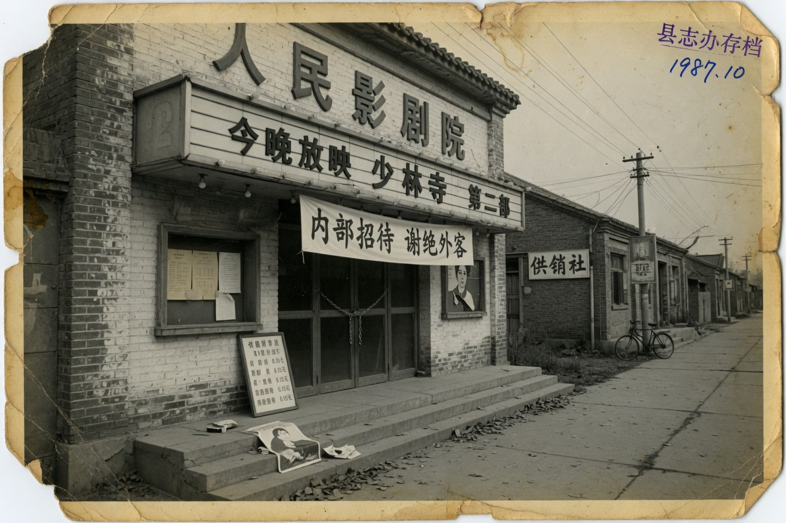

文娱资料摘录 数字已涂改 请勿当作公文

县情网的数字涂过。涂过的位置看起来像保密，其实是没人敢填准确死亡。准确死亡需要尸体。尸体没有。没有尸体的事故在摘录里写成下落不明。下落不明的业主，厅里仍把他写在出品人那一栏。
名录不收场记。场记不是编制。不是编制的人最适合被换成另一个名字。换成另一个名字时，红头网不会更新。更新发生在字幕和铁盒。铁盒比红头勤快。
梨河县这三个字是虚构的。虚构的县仍要有一条路。路叫金鹊西路。西路十八号在摘录里出现一次。一次就够。够你把厅和事故放在同一张红头上。红头下面还有电影院已撤。已撤的院线不管个体厅。不管的地方最适合留座这种土办法活下去。
老侯两个字在事故摘录里。人名可以搜。搜到的不是公文。
本页不是政务大厅。红头只是旧模板。不要对照真实区划。摘录只证明一件事：厅还在，业主不在，维持的办法叫留座。
名录里没有场记。场记不是工种，是座位上的手续。手续写进内部名单，不写进县情网。
虚拟站点 仅供作品使用